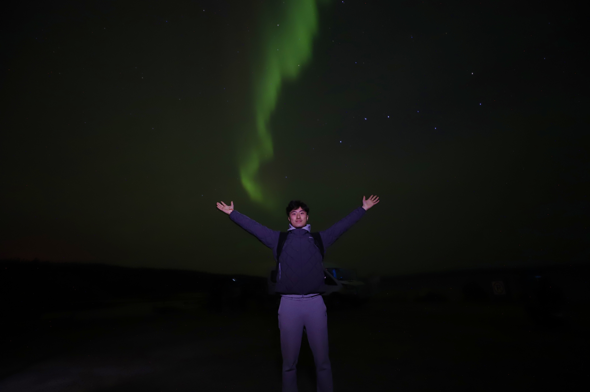

About Me

Bio
Hi! I’m Ximing Xu, a recent M.Sc. graduate in Astrophysics from University College London (UCL) and an aspiring astrophysics researcher with a strong interest in exoplanet research. My research interests include:
- Discovering, characterizing, and analyzing the demographics of exoplanets using techniques such as transit and microlensing.
- Studying the atmospheric composition and potential biosignatures of exoplanets ranging from hot Jupiters to terrestrial planets using transit spectroscopy.
I'm also a science communicator. Since December 2024, I have been producing a series of popular science videos on exoplanets: introducing the past, present, and future of human exoplanet exploration, and explaining the major detection techniques. I publish these videos on YouTube (channel: Simonverse) and Bilibili (a major Chinese media platform). The videos are narrated in Chinese with English subtitles, making them accessible to a wider international audience.